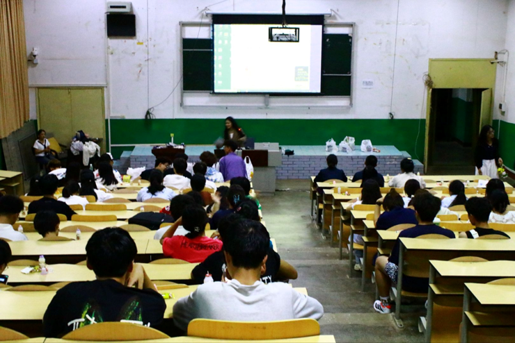
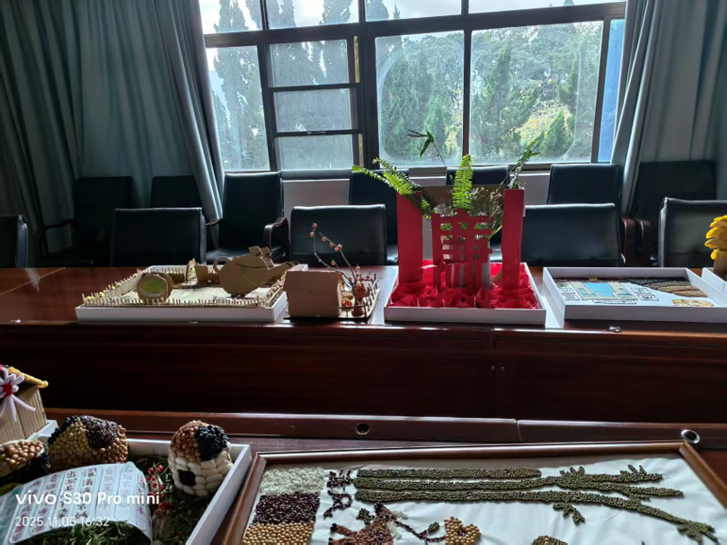

01
团支部
负责活动落地安排与执行。统筹活动现场的人员调度与秩序维护，把每一场活动的具体环节落到实处，保障活动有序开展。
 勤工俭学会
勤工俭学会
云南农业大学勤工俭学会成立于 1983 年 9 月，是在校团委领导支持下创办的云南农业大学第二个学生社团。社团以"全心全意为广大同学服务"为宗旨，传承"勤工俭学，自强不息"精神，秉承"一心一意，坚守承诺"的办事原则，坚守"团结、求实、勤勉、进取"的发展理念。
社团依托办公室、纪检部、团支部、宣传部四大部门，长期开展勤工俭学岗位帮扶、志愿公益服务、勤俭节约知识竞赛等特色活动，为在校学生提供实践锻炼机会，培育自尊、自立、自律、自强的优良品格。
近年来，社团围绕学生成长赋能、勤俭文化传播、公益实践育人的核心方向不断推进品牌建设，立足"校内潜、校外拓"的工作思路，形成服务育人、勤俭育人、实践育人三位一体的发展特色。社团将继续为广大同学搭建成长平台，弘扬勤俭奋斗精神，引领青年学子自立自强、奋勇前行。
负责活动落地安排与执行。统筹活动现场的人员调度与秩序维护，把每一场活动的具体环节落到实处，保障活动有序开展。
负责活动考勤与学分发放。规范活动签到与过程记录，整理社员参与情况与第二课堂学分数据，对接学校相关部门完成认定。
负责活动前期策划与安排。撰写活动方案、规划活动流程、统筹活动预算与物资准备，为每一场活动提供完整预案。
负责活动宣传、拍摄与后期剪辑。运营新媒体平台、设计活动海报、记录活动影像，用图文与视频传递社团风采。
从第一次全体大会，到每一次弯腰清扫与俯身记录。
这些画面，是我们与勤俭校园共同写下的注脚。

第 28 届勤工俭学会全体大会包含新老负责人发言、各部门展示、游戏互动及聘书、工作证发放等环节，旨在帮助新成员融入社团，明确发展方向，增强凝聚力。

本次讲座面向全校学生开展教室环境卫生科普宣讲，讲解教室清洁维护相关知识，同时进行教室勤工助学岗位招聘，帮助同学们了解校园保洁工作并获得勤工俭学机会。

活动为后续展览顺利开展筑牢基础，依托作品展传播清正廉洁理念，让全校师生在观赏作品的过程中感悟廉洁内涵，助力校园廉洁文化建设，营造风清气正的校园育人氛围。

活动引导青年学生主动学习廉政知识，树立崇廉尚洁意识，筑牢青年拒腐防变思想防线，将爱国担当与廉洁自律融入日常，共同营造风清气正的校园育人氛围。

勤工俭学会与清廉学社携手联动，在活动组织、资源统筹与现场调度中磨砺实操能力，并借项目承办提升社团在校园文化场域中的参与度与品牌影响力。
为提高大学生自我卫生意识，营造整洁、温馨、美好的校园环境，培养良好生活习惯，加强学生的校园环境保护意识，学校开展卫生检查活动，引导同学们健康生活。
围绕耕读文化、勤俭节约、清正廉洁三大核心主题打造沉浸式户外趣味闯关活动，以互动实践形式开展主题教育。活动普及农耕农事知识，传播廉洁正气，锻炼学生动手实操能力，丰富校园课余生活。
常态活动
2025 年 9 月 30 日 · 厚德楼、尚农楼、逸夫楼、明理楼、农学楼、工科中心
为提高大学生的自我卫生意识，营造整洁、温馨、美好的大学校园，培养同学们良好的生活习惯，加强全校学生对校园环境保护意识。我校开展卫生检查活动，希望维持校园环境，引导同学们健康生活。
2025 年 11 月 28 日 · 厚德楼、尚农楼、农学楼、明理楼、逸夫楼 ABC 区
为提高大学生的自我卫生意识，营造整洁、温馨、美好的大学校园，培养同学们良好的生活习惯，加强全校学生对校园环境保护意识。我校开展卫生检查活动，希望维持校园环境，引导同学们健康生活。

社团嘉年华 · 民族趣味运动会
勤工俭学会与清廉学社携手组队参赛，以认真的组织态度与扎实的现场调度在众多社团中脱颖而出，斩获团体第六名，展现社团团结协作、奋勇争先的风采。